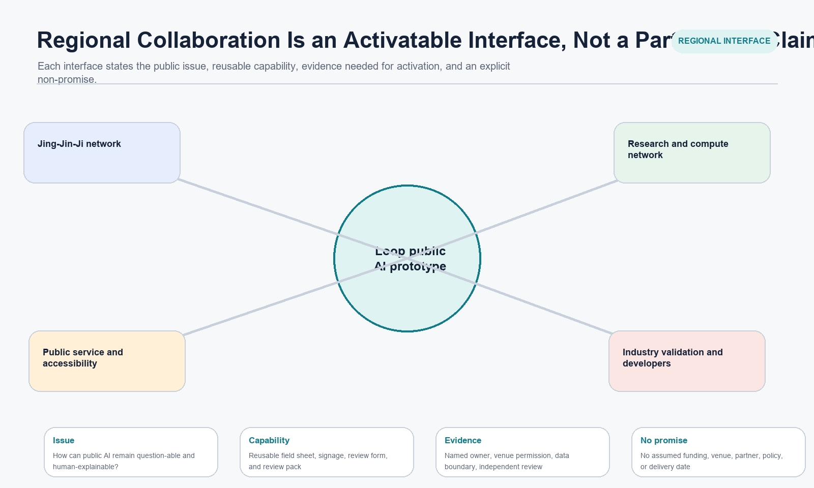

Key areas
Key areasPublic interfaces, human duties, and hard-stop conditions in the three key areas.
A conceptual public-service prototype for the Centennial Jing-Zhang AI Innovation Belt: people can understand, question, decline, receive a human explanation, and see how an issue is handled.
Provisional spatial anchors, not official redlines or engineering drawings. Key areas
Key areasPublic interfaces, human duties, and hard-stop conditions in the three key areas.
 Land use, buildings, and regeneration
Land use, buildings, and regenerationConcept structure and replaceable relationships, not statutory or construction conclusions.
 Walking and blue-green public space
Walking and blue-green public spaceThe service route from an observed break to a public return.
 Core metrics, task coverage, and self-check status
Core metrics, task coverage, and self-check statusRecalculation, pause chain, and the status to be confirmed by local checks.

AI scenarios, sources, and assumptionsScenario interfaces, regional collaboration, and the public-material boundary.
[source:USER-GPT-IMAGE-2-CONCEPT-RENDERS]
 Memory and evidence gateway
Memory and evidence gatewayA non-site concept visual for source reading, public explanation, and a human entry point.
 Question and co-creation commons
Question and co-creation commonsA non-site concept visual for paper feedback, co-prioritisation, and accessible participation.
 Human-review service corner
Human-review service cornerA non-site concept visual for human explanation, appeal, and a non-digital service route.
 Walking and accessibility-break diagnostic
Walking and accessibility-break diagnosticA non-site concept visual for a reversible, observed, and human-reviewed walking pilot.

[source:OFFICIAL-ANNOUNCEMENT] [source:AGENT-TASKBOOK] [source:POLICY-GENAI-INTERIM] [source:POLICY-BARRIER-FREE]
Policy sources support limited service-boundary, complaint-handling, and human-service contexts; they do not establish venue-specific compliance.
Official boundaries, parcels/ownership, road redlines, heritage, utilities, fire, transport, venue permission, independent costs, and collaboration agreements.
Concept overview and provisional spatial anchors.
Narrative, three prototypes, and pilot range; not an official boundary.
Three public-service interfaces at Zhongzhiyuan, AI Origin, and Dazhongsi.
A conceptual layer only, with no statutory land-use determination.
Walking and accessibility diagnosis, not a road-engineering conclusion.
Public experience focused on pause, access, and explanation.
No building target, construction quantity, or venue permission is claimed.
Records verifiable public questions, not a regeneration approval.
Walking/accessibility pilots with human review, appeal, and exit conditions.
Values, units, formulae, and limits are in metrics.json.
Question, space, operations, and recovery responsibility stay linked.
The local four-gate run updates self_check.json.
Traceable sources and use limits are listed in sources.json.
Public-material limits and required inputs are listed in assumptions.json.